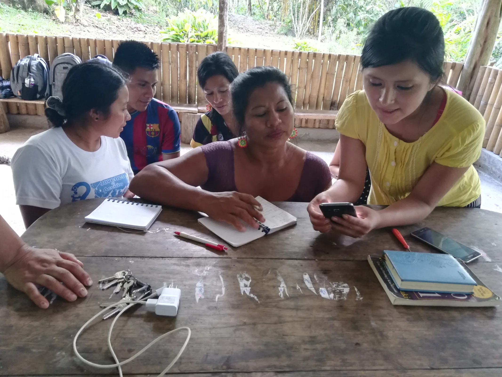
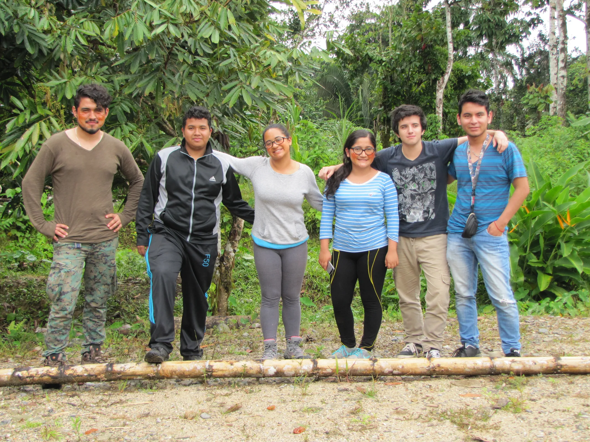

Co-Emprende
A community-led approach to building sustainable enterprises, practical skills, and more resilient local economies across Ecuador.
Entrepreneurship is strongest when it belongs to the place.
Co-Emprende strengthens sustainable entrepreneurship in Indigenous and rural communities across Ecuador. We provide training, mentorship, and tools for community leaders and youth to turn ideas into environmentally responsible, socially meaningful projects.

Skills that stay in the community.
We deliver workshops and practical training on eco-business models, sustainable development, and entrepreneurship. The goal is not to import a template, but to help local leaders shape projects that make sense for their resources, culture, and ambitions.

People are not beneficiaries. They are co-authors.
We connect local entrepreneurs with national and international mentors, foster collaboration, and support the design and launch of community-led initiatives in agri-tech, eco-tourism, renewable energy, and cultural heritage products.
Our focus includes Indigenous artisans and farmers, young community leaders, women-led initiatives, and environmentally conscious startups in rural areas.
Four ways to
move forward.
Co-Emprende links knowledge, networks, and local opportunity so an idea can move from a conversation to a durable initiative.
Begin with local strengths, community knowledge, and the environmental realities of the territory.
Translate ideas into practical green enterprises with clear social and environmental value.
Build relationships with mentors, universities, public programs, and other communities.
Create income-generating initiatives that preserve cultural identity and strengthen local resilience.
When local ideas
travel well.
Co-Emprende has been recognized for its potential to connect sustainable enterprise with social impact and community ownership.
The work has
a human scale.
These are the encounters that make the program more than a framework.


Support the next community-led idea.
Co-Emprende grows through partners who believe that sustainable development is strongest when communities lead the design.
Collaborate with us ↗